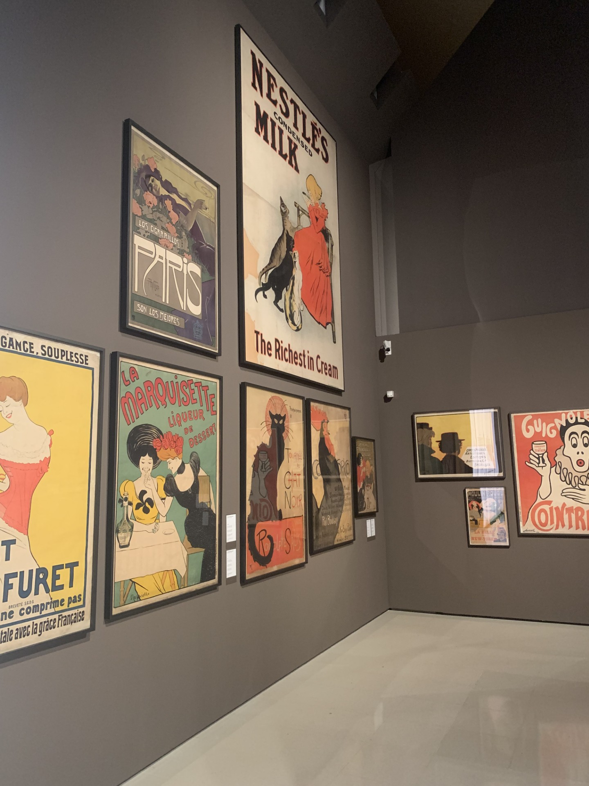
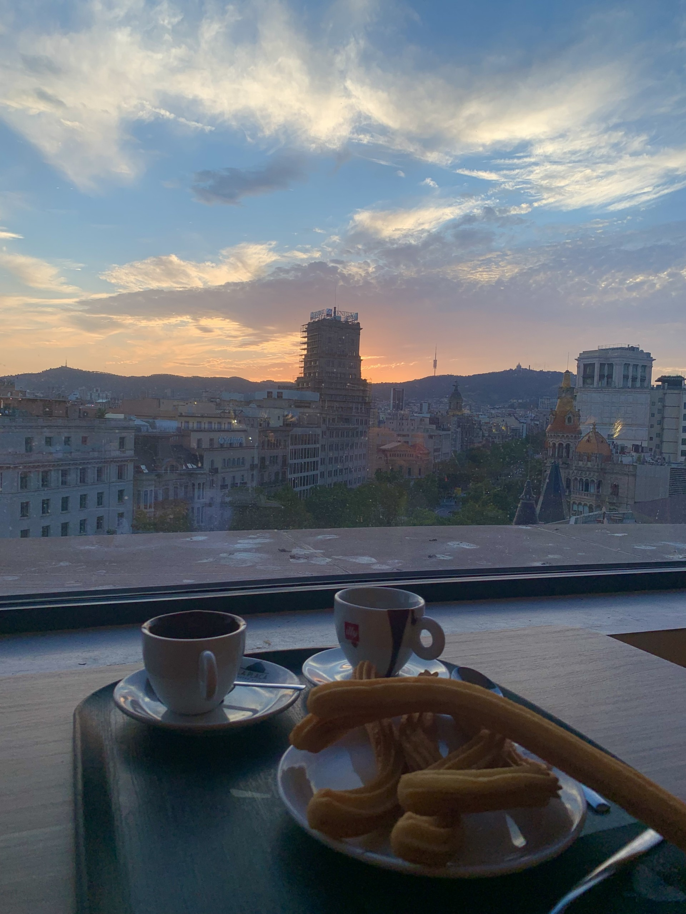
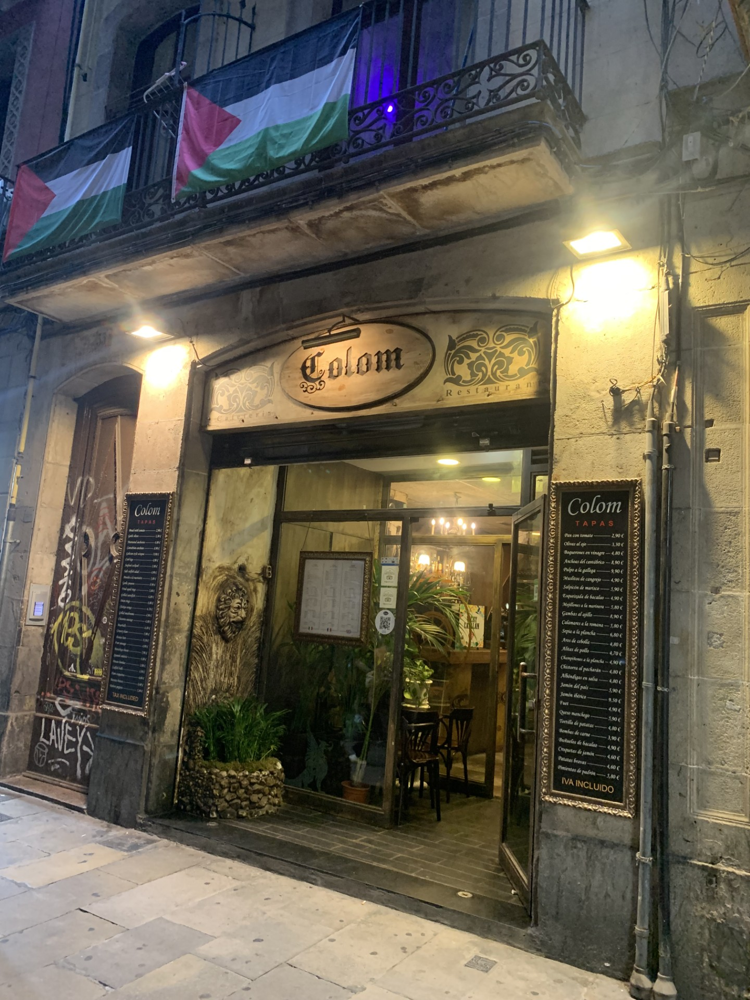
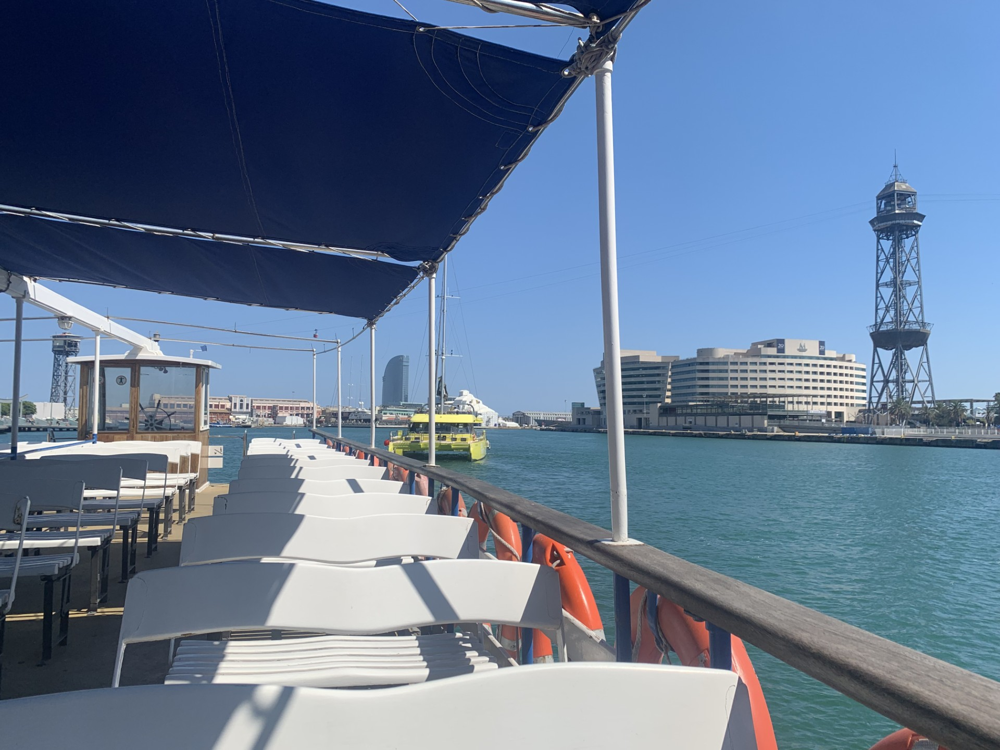
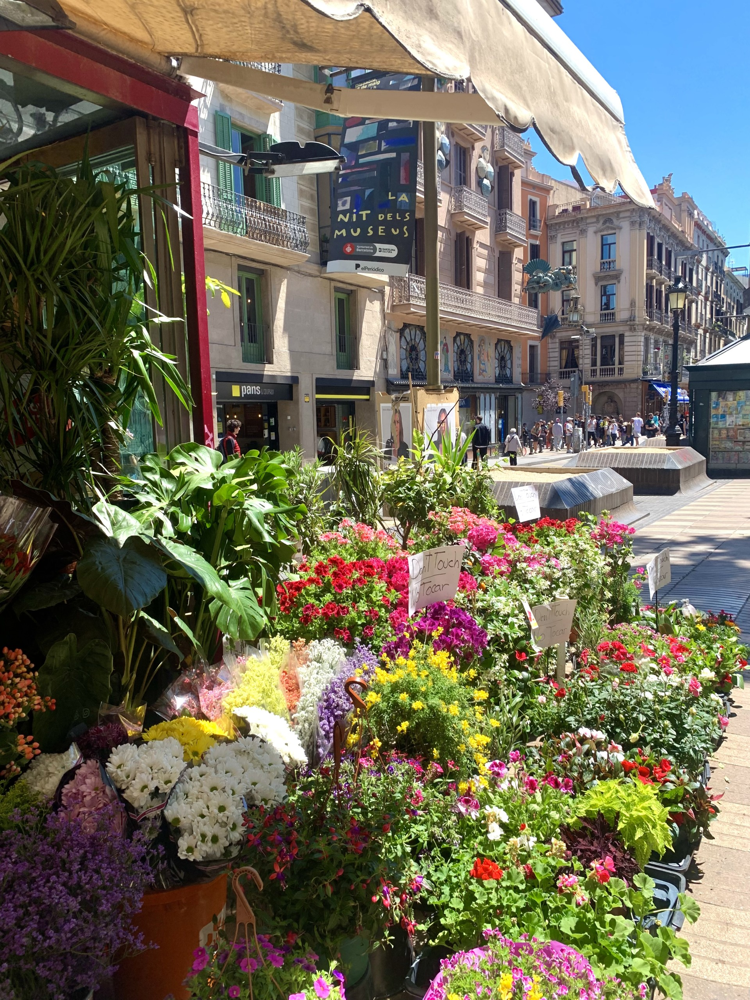

Museus gratuitos
Muitos museus em Barcelona oferecem entrada gratuita no primeiro domingo de cada mês, incentivando o
acesso à cultura tanto para
moradores quanto para turistas.

Transporte em Barcelona
A melhor opção de transporte em Barcelona para mais de uma semana é o cartão T-Usual, oferece viagens
ilimitadas durante
até 30
consecutivos. O custo para a Zona 1 (que cobre todo o centro e principais atrações) é de
aproximadamente €21,35.

Bate-volta para Sitges
Uma ótima dica é fazer um bate-volta para Sitges, uma cidade litorânea charmosa e muito agradável. O trajeto de trem dura cerca
de 30 a 40 minutos saindo de Barcelona, com passagens em torno de €5 a €10 (dependendo do horário e tipo de bilhete).
O ideal
é sair cedo para aproveitar melhor o dia, curtir as praias, o centrinho e voltar no fim da tarde.

El Corte Inglés Plaça Catalunya
No último andar do Corte Inglés há um espaço para comer,
com diversos tipos de comidas para todos os gostos e bolsos.
Com uma
visão panorâmica para a Praça da Catalunya,
ir no final da tarde quando o sol está se pondo é uma memória inesquecível

Colom Restaurant
Restaurante tradicional que serve paella, sangria, tapas e outras especialidades típicas locais, fica localizado na Ciutat Vella.

Las Golondrinas
Um passeio tradicional no porto de Barcelona, realizado em barcos turísticos de dois andares, geralmente com parte aberta na parte
superior, ideal para apreciar a vista.
O passeio percorre a área portuária e a costa da cidade, oferecendo uma perspectiva diferente de Barcelona, com vista para monumentos, praias e o movimento marítimo.
Duração: cerca de 40 a 60 minutos
Preço médio: entre 8€ e 15€ (dependendo do trajeto)

Bunkers del Carmel
Um dos mirantes mais incríveis de Barcelona. Localizado no alto da cidade, ele oferece uma vista panorâmica simplesmente
impressionante.
Originalmente, o local foi usado como base de defesa durante a Guerra Civil Espanhola, e hoje se tornou um
dos pontos preferidos de turistas e moradores.
Do topo, é possível ver praticamente Barcelona inteira, incluindo o mar, a cidade e diversos pontos turísticos.
Vale muito a
pena visitar, principalmente no final da tarde, quando o pôr do sol deixa a paisagem ainda mais bonita.

Palau de la Música Catalana
Uma das construções mais impressionantes de Barcelona. Apesar de ser uma sala de concertos, funciona também como espaço
cultural aberto à visitação.
O local é conhecido por sua arquitetura modernista, com vitrais coloridos, detalhes ornamentados
e uma estrutura extremamente rica em decoração.
É considerado um dos edifícios de concerto mais bonitos do mundo e foi declarado
Patrimônio Mundial pela UNESCO.
Mesmo para quem não entende de música, a visita vale muito pela beleza e pela experiência cultural.

Melhor época para visitar
A primavera é considerada a melhor época para visitar Barcelona, com clima agradável e menos turistas. Nessa época, as ruas ficam
mais floridas e a cidade ganha um visual ainda mais bonito.